分布式事务介绍
文章目录
1. 事务的基本概念
数据库事务（简称：事务）是数据库管理系统执行过程中的一个逻辑单位，由一个有限的数据库操作序列构成。
数据库事务拥有以下四个特性，习惯上被称之为ACID特性。 * 原子性（Atomicity）： 事务作为一个整体被执行，包含在其中的对数据库的操作要么全部被执行，要么都不执行[3]。 * 一致性（Consistency）： 事务应确保数据库的状态从一个一致状态转变为另一个一致状态。一致状态的含义是数据库中的数据应满足完整性约束。 * 隔离性（Isolation）： 多个事务并发执行时，一个事务的执行不应影响其他事务的执行。 * 持久性（Durability）： 已被提交的事务对数据库的修改应该永久保存在数据库中。
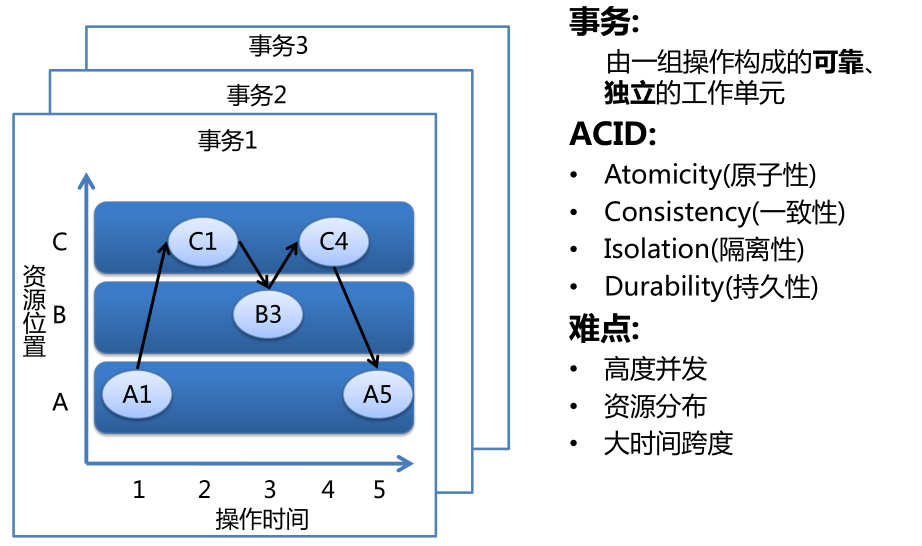
1.1 本地事务
在 Java 中，主要有 JDBC事务 、 JTA事务 。其中 JDBC事务 就是本地事务，它直接使用资源管理器（数据库）来控制事务。 > JTA事务在后面全局事务中会介绍 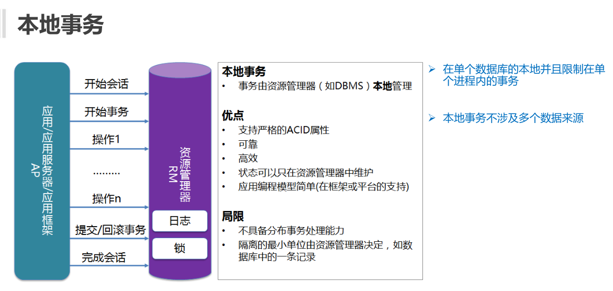
提示： > 有的地方也提到Java中还有容器事务，按我的理解不过是对 JTA 、 JDBC 的封装，如Spring事务框架既可以管理 JDBC 也可以管理 JTA 事务。
2. 分布式事务介绍
什么是分布式事务？ 分布式事务用于在分布式系统中保证不同节点之间的数据一致性。事务的参与者分布于网络环境中的不同的节点。也就是说可以将多个事务资源纳入到一个单一的事务之中，并且这些事务资源可以分布到不同的机器上。这些承载分布式资源的机器可能是出于同一个网络中，也可能处于不同的网络中。甚至说，某个事务资源本质上就是一个通过 HTTP 访问的单纯的 Internet 资源。因此一个分布式事务的服务操作可能会访问不止一个事务资源（比如访问两个不同的数据库服务器），也可能调用另一个服务。
分布式事务的实现有很多种，最具有代表性的是由Oracle Tuxedo系统提出的XA分布式事务协议。由于 XA 协议实现的局限性，后续又有很多柔性事务解决方案。
假如没有分布式事务是什么样的？ 在典型的交易系统中，通常会采用分布式架构。在一笔交易中，会涉及到调用多个服务来完成这笔交易。如下图所示： 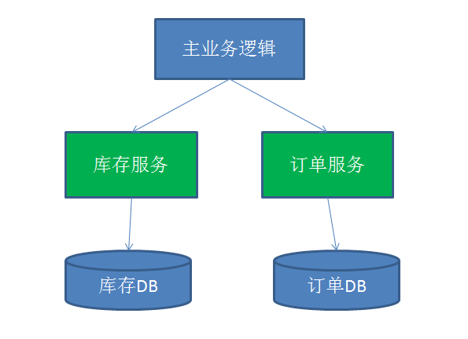 正常情况下，2个服务都执行成功，这样2个数据库能保持一致性。 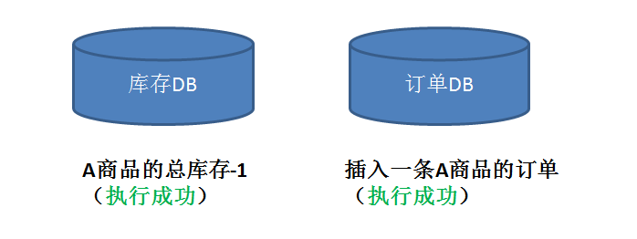 异常情况下，可能库存服务执行成功，但是订单服务执行失败。即库存扣减了，但是订单没生成。 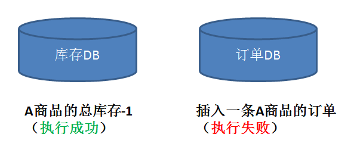
2.1 分布式事务大纲
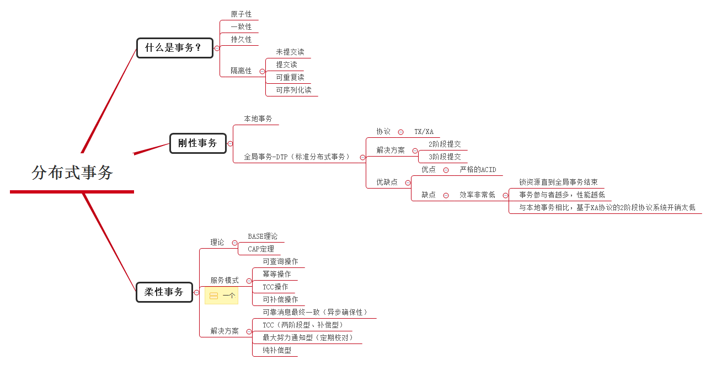
在分布式事务中，通常分为2类事务。 * 刚性事务 > 刚性事务满足严格的ACID，但是效率会比较低。在分布式系统中并不常用。
- 柔性事务 > 柔性事务基于BASE理论，满足A（原子性）D（持久性），但是会降低C（一致性）I（隔离性）来提高性能。
采用刚性事务还是柔性事务需要根据具体的应用场景来决定。
3. 刚性事务
上面介绍的本地事务也属于刚性事务，但是它不属于分布式事务，这里不再说明。
3.1 全局事务-DTP（标准分布式事务）
全局事务-DTP模型，主要通过事务管理器协调资源管理器并控制事务。如下图所示： 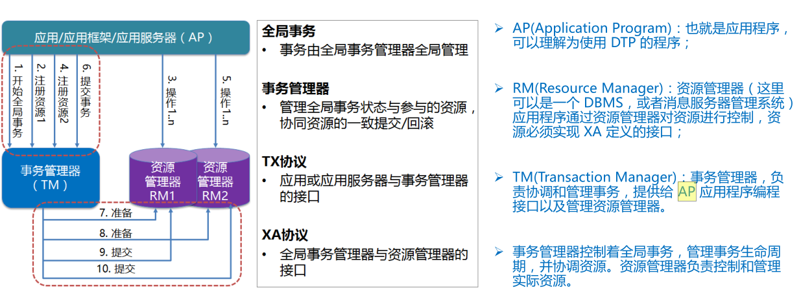
XA协议 主要定义了全局事务模型中TM和AM之间的协议接口。具体说明如下图所示： 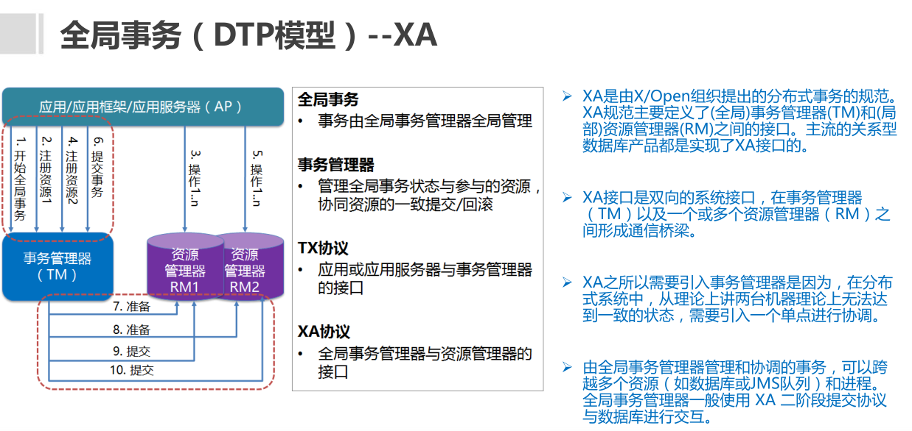
在JavaEE平台中，主要通过 XA 协议实现分布式事务。JavaEE中提供 JTA 接口，具体说明如下图所示。 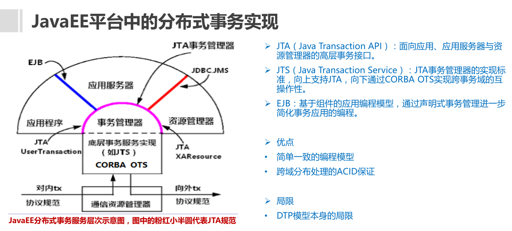
关于上图中提到的跨事务域，见下图： 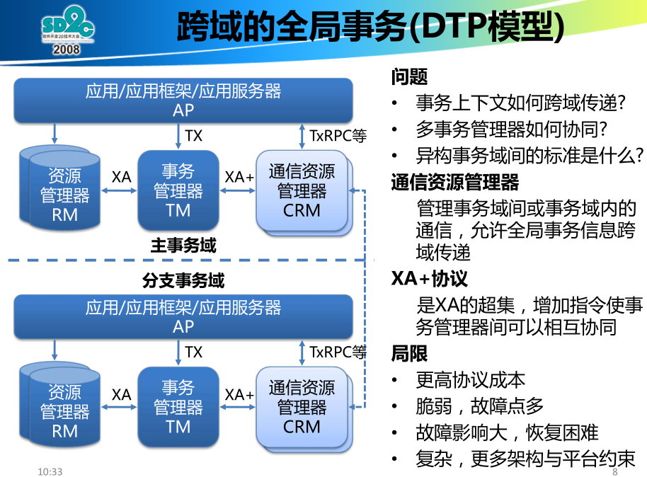
全局事务典型的具体实现是两阶段提交或三阶段提交协议。
3.2 两阶段提交
二阶段提交(Two-phaseCommit)是指，在计算机网络以及数据库领域内，为了使基于分布式系统架构下的所有节点在进行事务提交时保持一致性而设计的一种算法(Algorithm)。通常，二阶段提交也被称为是一种协议(Protocol))。在分布式系统中，每个节点虽然可以知晓自己的操作时成功或者失败，却无法知道其他节点的操作的成功或失败。当一个事务跨越多个节点时，为了保持事务的ACID特性，需要引入一个作为协调者的组件来统一掌控所有节点(称作参与者)的操作结果并最终指示这些节点是否要把操作结果进行真正的提交(比如将更新后的数据写入磁盘等等)。因此，二阶段提交的算法思路可以概括为：参与者将操作成败通知协调者，再由协调者根据所有参与者的反馈情报决定各参与者是否要提交操作还是中止操作。
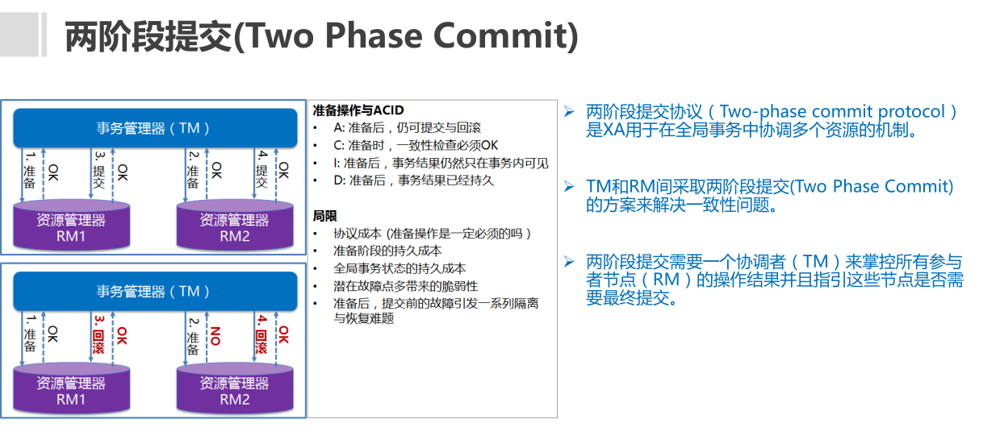
所谓的两个阶段是指： * 第一阶段：准备阶段(投票阶段) * 第二阶段：提交阶段（执行阶段）
准备阶段： 事务协调者(事务管理器)给每个参与者(资源管理器)发送Prepare消息，每个参与者要么直接返回失败(如权限验证失败)，要么在本地执行事务，写本地的redo和undo日志，但不提交，到达一种“万事俱备，只欠东风”的状态。
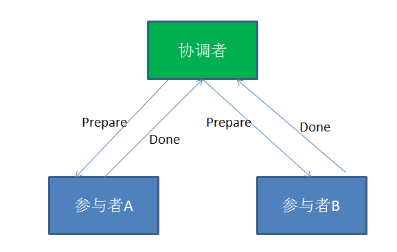
准备阶段主要分为3个步骤：
* 协调者向所有参与者发起Prepare请求
* 参与者接收到Parepare请求后，各自执行与事务相关的数据更新。并写入Undo Log和Redo Log。
> 此处若参与者执行成功，即参与者已经执行了事务操作，会锁定数据库资源。
- 参与者如果执行成功，暂时不提交事务，而是向事务协调者返回 完成 的消息，或返回 中止 的消息。
提交阶段： 1. 正常流程 如果在准备阶段全部收到完成消息，事务协调者给所有参与者发送 Commit 消息，所有参与者收到该消息后本地执行事务提交操作，并释放数据库锁资源。当本地事务提交完成后，向事务协调者返回 完成 消息。 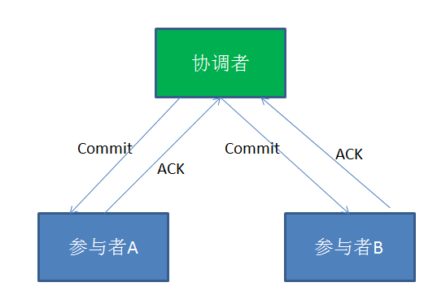
- 失败流程 如果在准备阶段收到中断消息，事务协调者给所有参与者发送 Rollback 消息，所有参与者收到该消息后本地执行回滚操作，并释放数据库锁资源。当本地事务回滚完成后，向事务协调者返回 完成 消息，事务协调者随后取消事务。 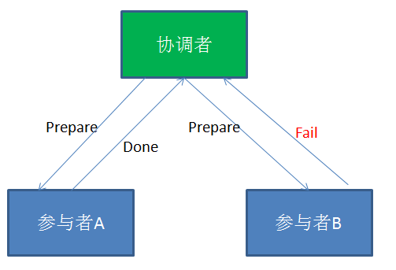 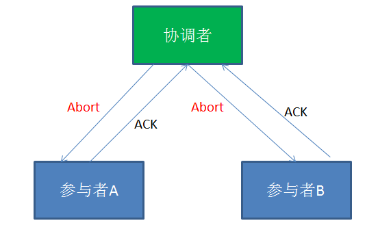
两阶段提交看起来确实能提供原子性操作，但是仍然存在几个问题： * 性能问题： XA协议遵循强一致性。在事务执行过程中，各个节点占用着数据库资源，只有当所有节点准备完毕，事务协调者才会通知提交，参与者提交后释放资源。这样的过程有着非常明显的性能问题。 * 单点故障： 事务协调者存在单点故障。一旦事务协调者在第二阶段发生故障，那么所有的参与者还处于锁定资源过程中，并且无法继续完成事务操作。 * 网络故障导致数据不一致： 第二阶段时，如果部分参与者与协调者之间存在网络故障，这将导致协调者发送 Commit 消息后只有部分参与者收到了 Commit 消息并执行了提交操作，而存在网络故障的参与者没有执行提交操作并一直阻塞。这将导致分布式系统中数据不一致的情况。
3.3 三阶段提交
三阶段提交是二阶段提交的改进版本，主要改进了2点： * 引入超时机制： 在协调者和参与者中引入了超时机制。 > 例如上面说到网络故障情况下，未收到 Commit 消息的参与者将会经过超时时间后自动提交，释放锁资源。
- 在准备和提交阶段中再添加一个准备阶段： 保证了在最后提交阶段之前各参与节点的状态是一致的。
> 现在相当于有了2个准备阶段加1个提交阶段，即
CanCommit、PreCommit、DoCommit（提交阶段）
三阶段提交示意图如下所示： 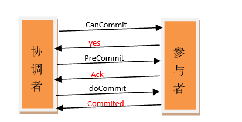
CanCommit阶段 * 事务询问： > 协调者向所有参与者发送 CanCommit 消息，询问是否可以执行事务提交操作，并等待事务参与者的响应。
- 参与者响应： > 参与者接收到 CanCommit 消息后，正常情况下如果认为自身可以执行提交事务，则返回 Yes ，否则返回 No
PreCommit阶段 当事务协调者发送 CanCommit消息 后，收到所有事务参与者返回 Yes 后进入 PreCommit阶段 。 1. 协调者向所有参与者发送 PreCommit 消息 2. 所有参与者收到消息后，执行事务操作，并记录UnDo和ReDo日志到事务日志中。 3. 如果参与者成功执行了事务操作，则返回ACK响应，并等待下一步指令。
当事务协调者发送 CanCommit消息 后，如果有事务参与者返回 No 或者等待响应超时，则执行事务的中断。 1. 事务协调者向所有参与者发送中断请求 2. 参与者收到来自协调者的中断请求后（或者超时未得到协调者的请求），执行事务的中断
DoCommit阶段 DoCommit阶段中真正地提交事务，分为2种情况： 正常并执行提交 1. 协调者收到所有参与者返回的ACK响应，进入 DoCommit 阶段，向所有参与者发送doCommit消息。 2. 参与者收到 DoCommit 请求后，执行正式的事务提交，并在执行事务之后释放事务资源。 3. 事务提交完成后，向协调者发送ACK响应。 4. 协调者收到所有参与者的ACK响应，结束事务。
中断事务 当协调者没有收到 PreCommit 阶段由事务参与者返回的ACK响应或响应超时，此时协调者会执行事务中断操作。 1. 向所有事务参与者发送中断请求 2. 参与者收到事务中断请求后，执行回滚 3. 参与者回滚完成后，向协调者发送ACK响应 4. 协调者收到参与者返回的ACK消息后，中断事务
三阶段主要是解决二阶段的单点故障问题，引入超时机制让参与者自动提交，但是这同样会造成数据不一致的情况。如因为网络原因，协调者发送中断消息，部分参与者没有收到中断并超时自动提交，这样就出现了数据不一致的情况。
4. 柔性事务
柔性事务主要用来解决分布式事务的方案是使用柔性事务。所谓柔性事务，相比较与数据库事务中的ACID这种刚性事务来说，柔性事务保证的事“基本可用，最终一致。”这其实就是基于BASE理论，保证数据的最终一致性。
虽然柔性事务并不像刚性事务那样完全遵循ACID，但是，也是部分遵循ACID的，简单看一下关于ACID四个属性，柔性事务的支撑程度： * 原子性：严格遵循 * 一致性：事务完成后的一致性严格遵循；事务中的一致性可适当放宽 * 隔离性：并行事务间不可影响；事务中间结果可见性允许安全放宽 * 持久性：严格遵循
4.1 理论
Base理论 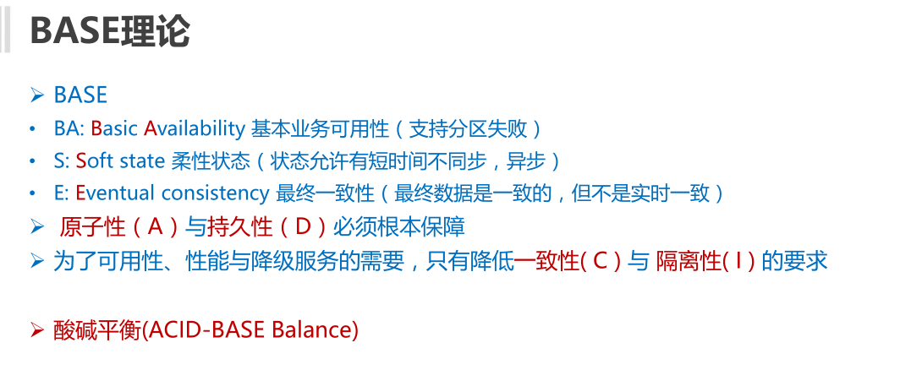
CAP定理 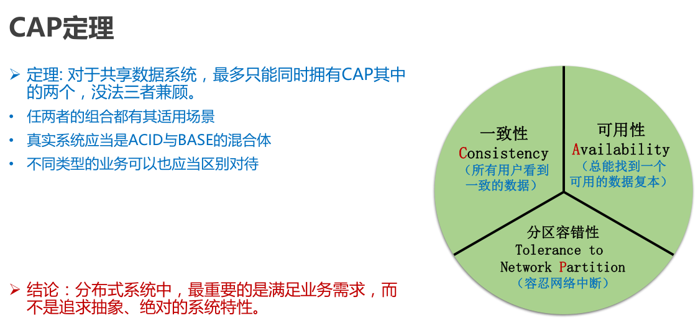
4.2 服务模式
柔性事务中的服务模式是做柔性事务的基础。做柔性事务时你的接口或功能必须满足其中的一个或几个服务模式，不一定要都满足，但是不满足的话肯定是做不成柔性事务的。
服务模式并不等价为柔性事务解决方案，一个柔性事务解决方案可能会用到一到多个服务模式。 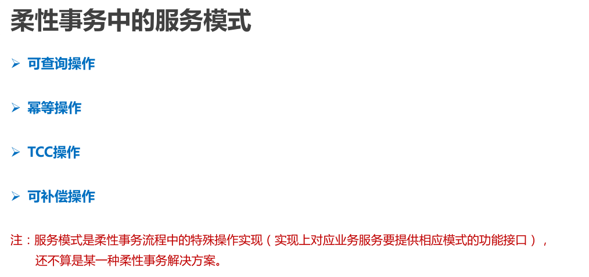
可查询操作 例如，在下面的代码中，除了orderDao是本地操作外，其它操作全是Rpc调用操作。
|
|
这种情况就明显需要引入分布式事务了，否则无法保证数据的一致性。在分布式事务中，就需要明确地知道这几个RPC服务的处理情况，即这几个事务参与者需要提供查询接口，这样才能判断出这几个RPC操作的处理情况。
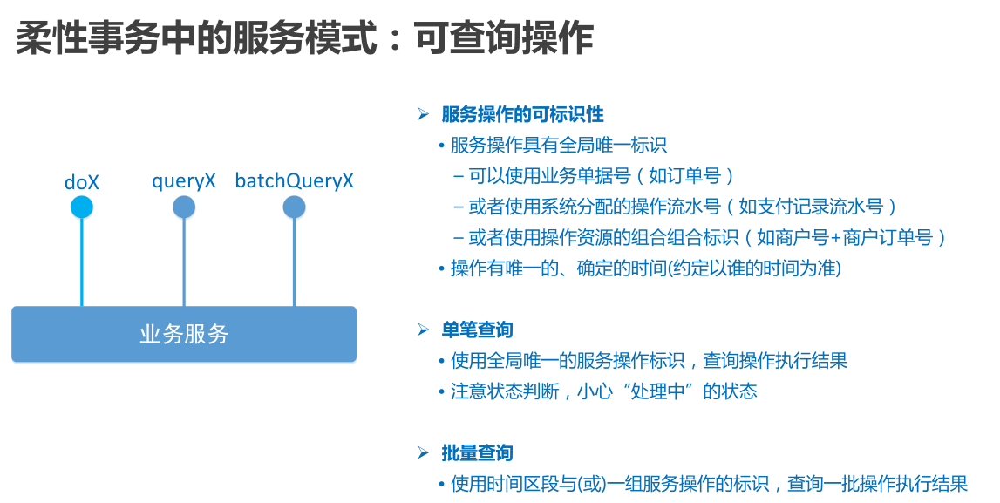
幂等操作 幂等操作的特点是其任意多次执行所产生的影响均与一次执行的影响相同。也就是说，同一个方法，使用同样的参数，调用多次产生的业务结果与调用一次产生的业务结果相同。
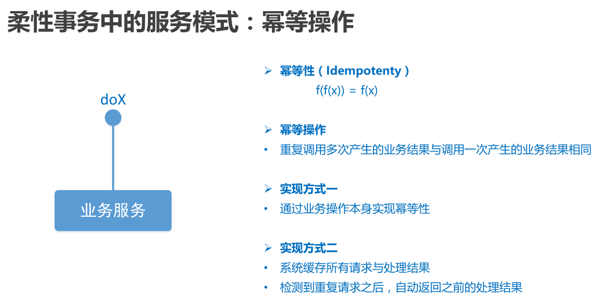
要求功能方法实现幂等性，主要是为了数据的一致性，比如在事务补偿时需要不停地重试。如果方法没有实现幂等，就无法被重试了。
TCC操作 TCC 即 Try-Confirm-Cancel，类似于2阶段提交，它位于业务层。
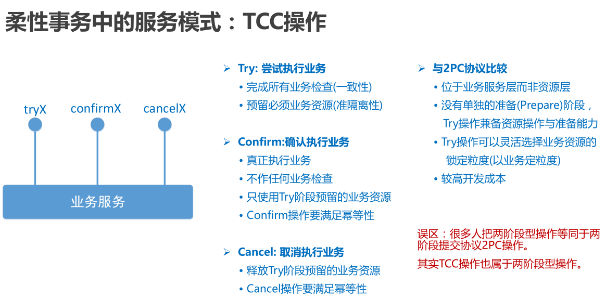
可补偿操作 在事务操作失败时，会执行 Rollback 操作。典型的如 TCC型解决方案 中会在业务层提供方法来手动回滚，这个方法就是补偿方法，同时需要满足幂等性。
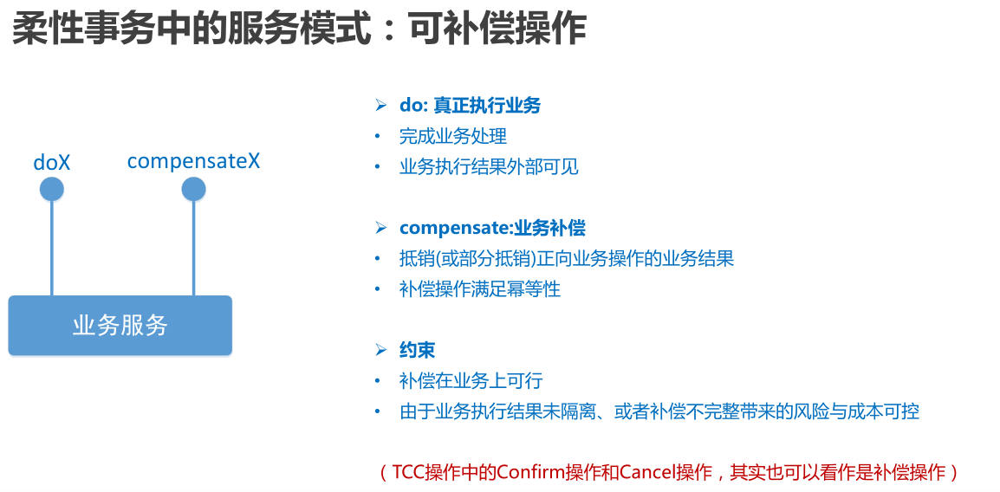
4.3 解决方案
4.3.1 可靠消息最终一致（异步确保性）
这种解决方案主要是基于消息中间件服务，异步确保最终一致性。
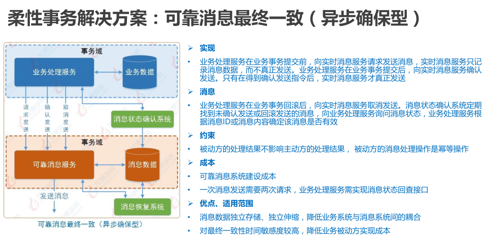
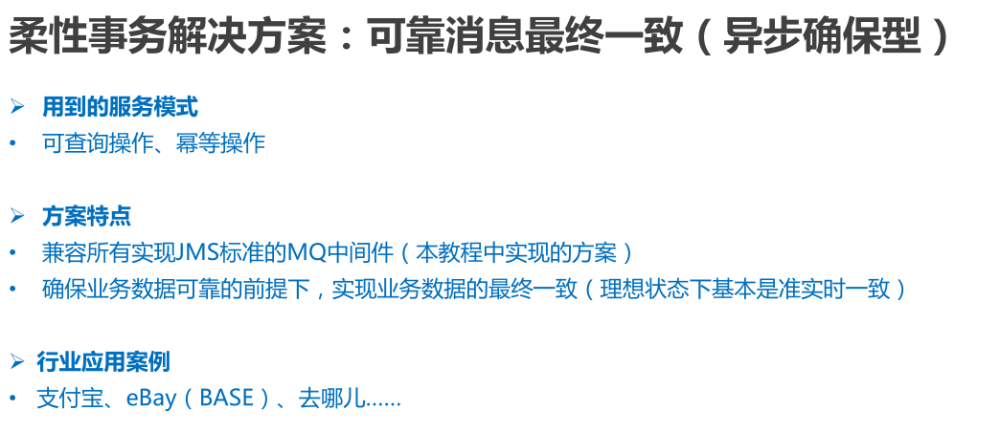
4.3.2 TCC（两阶段型、补偿型）
TCC型解决方案类似于前面介绍的两阶段提交，不过它是在业务层，通过代码手动提交、回滚等。 > 开发量非常大，原本一个业务操作现在要写3个方法（try、confirm、cancel）
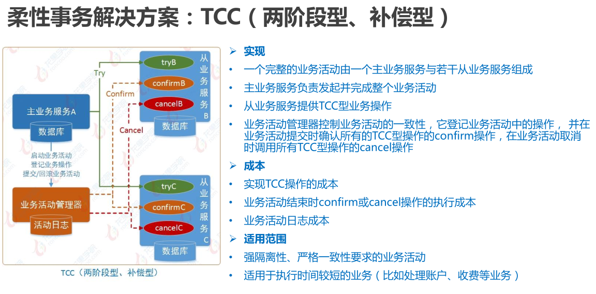
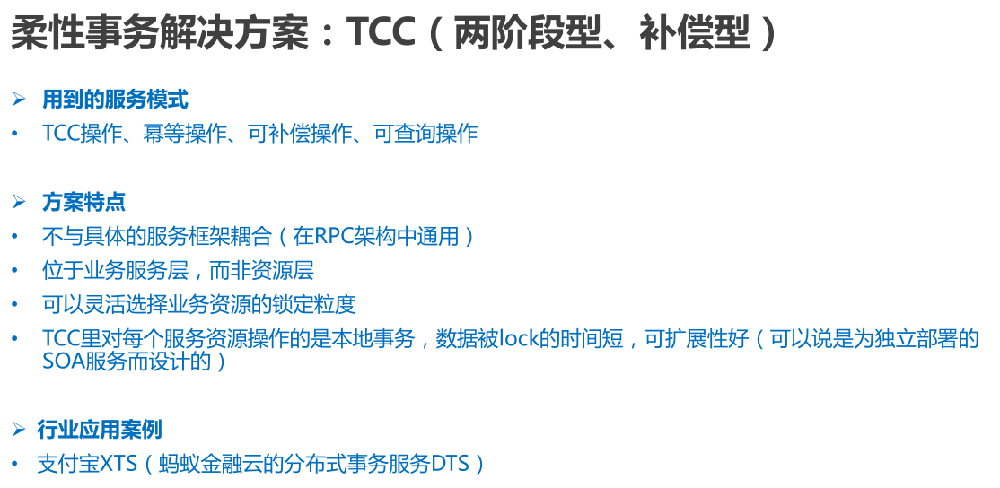
4.3.3 最大努力通知型（定期校对）
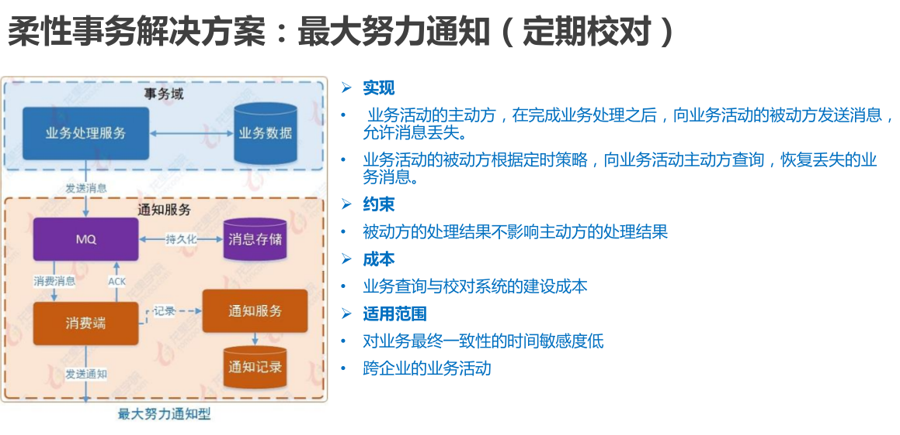 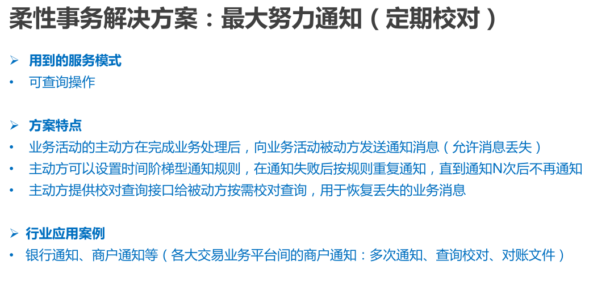
4.3.4 纯补偿型（略）
5. 事务框架
目前开源的分布式事务框架较大，主要是国内开发者贡献的。SpringCloud中文社区对常见的几种分布式事务框架进行了对比，链接如下：http://springcloud.cn/view/374
5.1 TCC-Transaction
GitHub地址：https://github.com/changmingxie/tcc-transaction
Star数：2794+
TCC-Transaction 是典型的 TCC 型分布式事务解决方案，它不和底层 RPC 框架耦合，即doubbo,thrift,web service,http等都能支持。不过，该框架中提供了*dubbo*的额外支持。 > 该框架中会在 TCC 基础上，定时检测业务活动日志库并执行事务恢复保证最终一致。
这个框架认真地体验过，也看过该框架的源代码。最终没有选择该框架，主要原因如下： 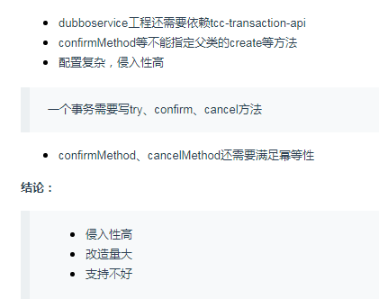
5.2 TX-LCN
GitHub地址：https://github.com/codingapi/tx-lcn
Star数：1444+
正准备尝试…
5.3 hmily
GitHub地址：https://github.com/yu199195/hmily
Star数：1836+
5.4 EasyTransaction
GitHub地址：https://github.com/QNJR-GROUP/EasyTransaction
Star数：1113+
5.5 支付宝XTS
支付宝XTS本质上实际是TCC型解决方案。
5.6 阿里GTS
阿里GTS，商业收费，闭源。据说很牛，一个注解搞定分布式事务。
https://www.aliyun.com/aliware/txc?spm=5176.8142029.388261.386.a72376f4lqvQxv
5.7 meepo
仿阿里GTS的开源版：https://github.com/wxbty/meepo
5.8 Seata
阿里开源分布式事务解决框架Seata
6. 参考资料
站在巨人的肩膀上
1. XA二阶段、三阶段提交
博客：什么是分布式事务？
https://blog.csdn.net/bjweimengshu/article/details/79607522
Oracle XA协议 Oracle XA协议
2. 分布式事务原理介绍
本文主要参考下面这个文档 大规模SOA系统中的分布事务处事_程立.pdf
下面这个文档是龙果网参考《大规模SOA系统中的分布事务处事_程立.pdf》编写的
3. 支付宝分布式事务文档
4. 事务系列文章
文章作者 张雄彪
上次更新 2019-08-25